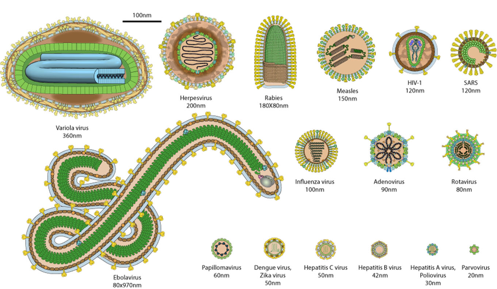

Structure and classification of Viruses
Sopheap Oeng
31 Oct 2025
Objectives
After this session, students should be able to:
- Describe the history of the discovery of the virus
- Define what a virus is
- Define capsomer, capsid, genome, nucleocapsid, and envelope
- Differentiate the 3 structural components of viruses
- Mention 3 types of capsid symmetry
- Describe the nature of the viral envelope
- Explain the epidemiological consequences of having an envelope
- List the main criteria for classifying viruses
Introduction: What is a Virus?
Introduction (cont.)
- Viruses cause a wide range of diseases in humans, animals, and plants
- Many virus: responsible for subclinical or mild infections (e.g, Adenovirus, Rhinovirus)
- Other viruses: cause severe diseases (e.g., HIV, Ebola, SARS-CoV-2)
Virus vs Cells
Discovery of viruses
- First virus discovered: Tobacco mosaic virus
(1892) by Ivanovsky - Beijerinck confirmed the concept of “filterable agents”
- Discovery of bacteriophage and animal viruses followed
Discovery of viruses (cont.)
Definition of virus
- Intracellular parasites
- Contain either DNA or RNA (never both)
- Unable to reproduce independently — require a host cell
- Too small to be seen under a light microscope range from 20-300 nm

General structure of viruses
- Core (Genome) — genetic material
- Capsid — protein coat surrounding the genome
- Envelope (optional) — lipid membrane derived from host
Genome
- Made of DNA or RNA
- May be single-stranded (ss) or double-stranded (ds)
- Can be linear, circular, or segmented
Capsomer & Capsid
Capsomer
- Made of one or more polypeptides
- Combine to form the capsid
Capsid
- Protein coat made of capsomers
- Protects the viral genome
- Determines shape and symmetry of the virus
Nucleocapsid
- Combination of capsid + genome
Envelope
Lipid membrane derived from host cell -> “hide from immune system”
Contains viral glycoproteins (e.g., hemagglutinin, neuraminidase) for attachment and entry
Not all viruses have envelopes
Enveloped: e.g., Influenza virus, HIV, Herpes simplex virus (HSV)
Non-enveloped or Naked: e.g., Adenovirus, Poliovirus
Consequences of envelope
Envelop
- Sensitive to heat, acid, and detergents
- Spread by direct contact or droplets (HSV, HIV)
- Easily inactivated outside host
Non-enveloped or naked
- More resistant and stable (e.g., drying, detergents, acid)
- Transmission through fomites (contaminated surfaces) via fecal-oral route
- Can survive longer outside the host. E.g., Adenovirus, Poliovirus
E.g Enveloped vs Non-Enveloped Viruses (cont.)
| Enveloped viruses | Non-Enveloped viruses |
|---|---|
| Herpesviridae | Adenoviridae |
| Retroviridae | Picornaviridae |
| Coronaviridae | Parvoviridae |
| Orthomyxoviridae | Caliciviridae |
Symmetry of Capsid
- Helical – rod-like spiral
- Icosahedral – spherical, 20 faces
- Complex – irregular (e.g., bacteriophages)
Helical symmetry
- Genome coiled within capsid proteins
- Found in RNA viruses like Influenza or Tobacco mosaic virus
Icosahedral symmetry
- Efficient, stable, and common in many animal viruses
- Example: Adenovirus, Poliovirus
Complex symmetry
- Not purely helical or icosahedral
- Seen in large viruses like Poxvirus and Bacteriophage
Shape & size
- Spherical, rod-shaped, bullet-shaped, or complex

Baltimore classification
- Type of nucleic acid (DNA or RNA)
- Strandedness (single or double)
- Mode of replication
Baltimore classification (cont.)
| Group | Type | Mnemonic |
|---|---|---|
| I | dsDNA | HAPPY* |
| II | ssDNA | Parvovirus |
| III | dsRNA | Rotavirus |
| IV | (+) ssRNA | +RNA* |
| V | (–) ssRNA | Influenza |
| VI | ssRNA-RT | HIV |
| VII | dsDNA-RT | Hepatitis B |
- dsDNA: HAPPY (Herpes, Adeno, Papova, Pox, Y)
- +RNA(TOGA party I drink FLAVored CORONA and eat small PICORNA CALI soup.) (Toga, Flavi, Corona, Picorna, Calici)
Virus causing disease in humans
Virus causing disease in humans (cont.)
Other classification
- Since 1975, the International Committee on Taxonomy of Viruses (ICTV) has developed a universal virus classification system:
- Order (-virales) e.g. Herpesvirales
- Family (-viridae) e.g. Herpesviridae
- Subfamily (-virinae) e.g. Alphaherpesvirinae
- Genus (-virus) e.g. Simplexvirus
- Species (common name) e.g. Human herpesvirus 1
Writing virus names
| Level | Example | Ending / Style | Writing Style |
|---|---|---|---|
| Order | Amarillovirales | –virales | Italicized, Capitalize first letter |
| Family | Flaviviridae | –viridae | Italicized, Capitalize first letter |
| Genus | Flavivirus | –virus | Italicized, Capitalize first letter |
| Species | Dengue virus | (no fixed ending) | Italicized, Capitalize first letter only of first word |
| Common name | dengue virus | (descriptive) | Not italicized; lowercase |
Quiz
Which of the following best defines a virus?
- A living organism that can reproduce independently
- An intracellular parasite containing either DNA or RNA that requires a host cell to reproduce
- A type of bacteria that causes disease
- A protein structure that can self-replicate
What are the three main types of capsid symmetry found in viruses?
- Circular, linear, and segmented
- Small, medium, and large
- Helical, icosahedral, and complex
- DNA, RNA, and protein
Which statement about enveloped viruses is CORRECT?
- They are more stable in the environment than non-enveloped viruses
- They are sensitive to heat, acid, and detergents
- They can only infect bacterial cells
- They always contain DNA genomes
In the Baltimore Classification System, Group IV viruses are characterized by:
- Double-stranded DNA
- Single-stranded DNA
- Positive-sense single-stranded RNA (+ssRNA)
- Double-stranded RNA
Who discovered the first virus (Tobacco mosaic virus) and in what year?
- Louis Pasteur in 1885
- Dimitri Ivanovsky in 1892
- Frederick Towrt in 1915
- Felix d’Herrelle in 1917
Which virus family does HIV belong to, and what type of genetic material does it contain?
- Herpesviridae; DNA
- Retroviridae; RNA
- Adenoviridae; DNA
- Picornaviridae; RNA
What is the characteristic feature of Coronaviridae family viruses?
- Icosahedral capsid without envelope
- Crown-like spike proteins on envelope surface
- Complex symmetry with tail fibers
- Helical nucleocapsid without envelope
According to Baltimore Classification, which group does Hepatitis B virus belong to?
- Group I (dsDNA)
- Group VI (ssRNA-RT)
- Group VII (dsDNA-RT)
- Group IV (+ssRNA)
Which of the following viruses is NON-ENVELOPED?
- Influenza virus
- Herpes simplex virus
- Rotavirus
- SARS-CoV-2
What makes Parvovirus unique among DNA viruses?
- It has the largest genome
- It contains single-stranded DNA
- It only infects bacteria
- It has complex symmetry
Classify viruses. Which are the main classification criteria?
- Size and color only
- Type of nucleic acid, capsid symmetry, and presence/absence of envelope
- Host species and transmission route only
- Geographic location and discovery date
Summary
References
1.
Sokdalis C. Virology training materials. 2024.
2.
Hulo C, Masson P, de Castro E, Le Mercier P. Vol. 39, Nucleic Acids Research. 2011 [cited 2025 Oct 24]. p. D708–13 ViralZone: A knowledge resource to understand virus diversity. Available from: https://viralzone.expasy.org/
3.
Louten J. Essential human virology. London, UK; San Diego, CA, USA; Cambridge, MA, USA; Oxford, UK: Elsevier (Academic Press); 2016.
4.
Das S, Saha R. Microbiology practical manual, third edition. New Delhi, India: CBS Publishers & Distributors Pvt Ltd; n.d.
5.
Mishra B. Textbook of medical virology, second edition. New Delhi, India: CBS Publishers & Distributors Pvt. Ltd.; 2022.
6.
Tille PM. Bailey & scott’s diagnostic microbiology, 14th edition. 14th ed. St. Louis, Missouri, USA: Elsevier; 2017.
7.
Kudesia G, Wreghitt T. Clinical and diagnostic virology. Cambridge, UK; New York, USA; Melbourne, Australia; Madrid, Spain; Cape Town, South Africa; Singapore; São Paulo, Brazil: Cambridge University Press; 2009.
8.
Knipe DM, Howley PM. Fields virology: Emerging viruses. 7th ed. Vol. 1. Wolters Kluwer; 2022.